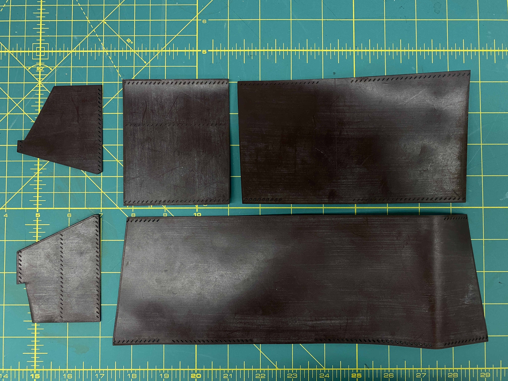

I started making leather goods in 2015. It’s been a while since I last touched my tools. Now I need a gift idea for a male person so I decided that a leather wallet is a good idea *.
The design is derived from the one shown in this video:
It also documented very well all the manual procedures, which I followed.
To me, the hardest step in leathercraft is designing and cutting the pattern. Fortunately, I managed to find a shortcut to patterning - using a laser cutter. Laser cutting is precise, and the heat generated during laser cutting also burnishes the edge, to some extent.
I processed my pattern in Rhino and generated two layers: cutting layer (black) and grooving layer (red). The cutting layer shows all the outlines and the grooving layer directs the laser to groove the stitching lines. You can find the pattern in Rhino 7 here.
In practice, I used a Trotec 400 laser cutter. Settings: 100% power and 10% speed repeated for 3 passes for cutting, 25% power and 80% speed offsetted for 0.13 in for grooving.
I handsewed the five pieces following the orders shown in the tutorial above.


This wallet was gifted to Karan Ahuja on his birthday.